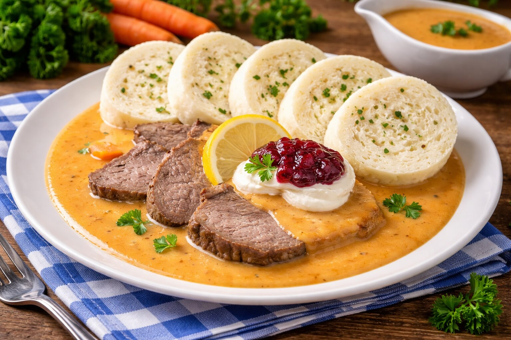

Suroviny
- 800 g hovädzieho mäsa
- 2 veľké cibule
- 2 mrkvy
- 150 ml smotany na varenie
- 2 strúčiky cesnaku
- Soľ, čierne korenie, rasca podľa chuti
- 50 g masla alebo oleja
- 1 L vody
Postup
- Mäso nakrájame na kocky a opečieme na masle spolu s nakrájanou cibuľou.
- Pridáme nastrúhanú mrkvu a cesnak, krátko orestujeme.
- Zalejeme 1 l vody, pridáme koreniny a dusíme približne 2 hodiny.
- Po dovarení zahustíme smotanou a podávame s knedľou alebo cestovinou.